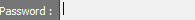

#oem 별 client focusing 및 client 실행 def focus_app(appName): global g2client g2client = App(appName) g2client.focus() def openApp_logIn(path,image): check=str(g2client) if check[1]=='-': App.open(path) while not exists(image): wait(1) type(image,"12345678"+Key.ENTER) def oem_client(): oem=open("c:/sikuli/TestResult.txt").read(1) if oem == "I": focus_app("G2Client.exe") openApp_logIn("C:\IDIS Solution Suite\Client\G2Client.exe",Pattern().similar(0.92)) else: focus_app("G2Client.exe") openApp_logIn("C:\iNEX\Client\G2Client.exe",Pattern().similar(0.92)) oem_client()